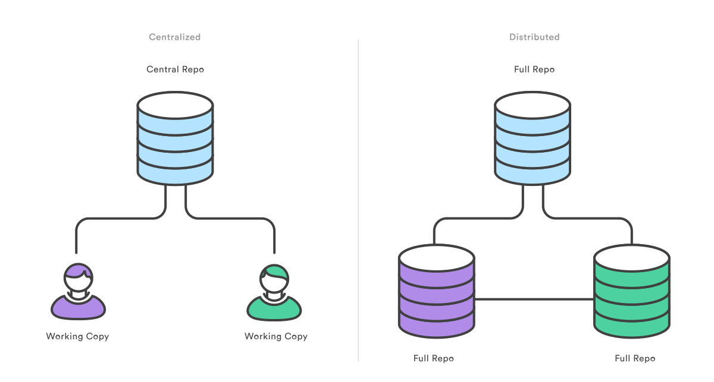
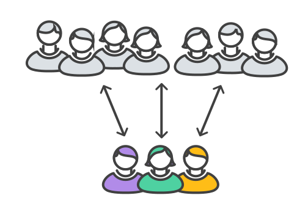

Bootcamp
Disponível na web em http://git-bootcamp.github.io/slides/
Criado por Erick Mendonça
Hello!
Full Stack Developer
GDG Aracaju Co-organizer
erickmendonca
erickmagnus
Agenda
- Sistemas de controle de versão
- Por que usar o Git?
- Instalação e configuração inicial
- Comandos básicos
- Conceito de staging area
- Como criar versões do seu projeto
- Como desfazer alterações
- Enviando seu projeto para um servidor
Agenda
- Baixando projetos de um servidor
- Merge e rebase
- Resolvendo conflitos
- Estratégias para fluxo de trabalho
- Colaborando com projetos open source
- Como manter um repositório
- GitHub, Bitbucket e outros serviços
O que é?
Controle de versão distribuído
Gratuito e open source
Inicialmente desenvolvido por Linus Torvalds
Lançado em 2005 sob a licença GNU GPL v2
Controle de versão

Controle de versão é um sistema que registra as alterações em um arquivo ou conjunto de arquivos.
Permite que você possa recuperar versões anteriores dos arquivos.
Podem ser usados com outros tipos de arquivos além de código-fonte.

git não é
Subversion
Esqueça o SVN!
não é uma evolução

não é uma evolução

Centralizado

Distribuído

Armazenando diferenças

Armazenando em grafos

Porque usar ?
Vamos falar mais disso depois, mas por enquanto...
- É rápido: poupa tempo
- Você pode trabalhar offline
- Você pode desfazer coisas sem dificuldade
- Não se preocupe, todo mundo tem uma cópia inteira
- Commits são úteis e significam algo real
- Trabalhe do seu jeito
- Não misture as coisas
- Siga o fluxo
Como usar?

Calma!
config
O comando git config te permite alterar algumas configurações de sua instalação Git.
git config opções
git config --global user.name "Meu nome"
git config --global user.email meu@email
init
O comando git init inicia um novo repositório.
Se não for informada uma pasta, ele cria no diretório atual!
git init pasta
add
O comando git add te permite selecionar quais arquivos serão salvos no controle de versão.
git add arquivo/pasta
commit
O comando git commit pega os arquivos selecionados e os salvam no histórico do projeto.
git commit -m mensagem
status
O comando git status mostra o estado atual da pasta de trabalho.
git status
Fluxo

log
O comando git log permite inspecionar o histórico do projeto.
git log opções
checkout
O comando git checkout possui vários usos: checar arquivos, commits e branches.
git checkout commit/branch
revert
O comando git revert desfaz um commit salvo, mas sem alterar o histórico do projeto.
git revert commit
reset
O comando git reset desfaz alterações em arquivos na pasta de trabalho.
git reset opções arquivo
clean
O comando git clean remove arquivos que não estão no repositório da pasta de trabalho.
git clean opções
branch
O comando git branch permite criar ambientes de desenvolvimento isolados dentro do mesmo repositório.
git branch nome
merge
O comando git merge é uma forma poderosa de integrar mudanças em branches diferentes.
git merge opções branch
rebase
O comando git rebase permite mover branches, alterando o histórico para que seja mais linear.
git rebase base
Conflitos

Hora da revisão

git init

git add .
git commit -m "C1"

git commit -m "C2"

git branch idea
git checkout idea
git commit -m "C3"

git checkout master
git checkout -b hotfix
git commit -m "C4"

git checkout master
git merge hotfix

git merge idea

git branch -D hotfix

git tag v1

git commit -m "C6"

git checkout -b refactor
git commit -m "C7"

git checkout master
git commit -m "C8"
git commit -m "C9"

git checkout refactor
git commit -m "C10"

git rebase master

diff
O comando git diff exibe as mudanças entre commits, árvores e elementos dentro do repositório.
git diff opções
git diff
Diferenças entre os arquivo atuais e suas últimas versões adicionadas.
git diff src/ git diff LICENSE
Diferenças entre a pasta ou arquivo e suas últimas versões adicionadas.
git diff --cached master git diff --cached HEAD git diff --cached 22981ec
Diferenças entre os arquivos adicionados e um outro commit.
master: a branch master
HEAD: ponto atual do repositório
22981ec: um commit antigo
clone
O comando git clone cria uma cópia local de um repositório Git.
É o método mais comum de obter o código de alguém!
git clone repositório pasta
remote
O comando git remote permite gerenciar as conexões remotas do seu repositório.
git remote opções
fetch
O comando git fetch baixa uma branch de outro repositório remoto, como todos os commits e arquivos.
git fetch remote branch
pull
O comando git pull é uma automatização: ele faz o fetch do repo remoto e o merge com o branch atual.
git pull opções remote branch
push
O comando git push move uma branch local para outro repositório.
Envia o seu código para outro lugar!
git push remote branch
Exercícios
git-bootcamp/git-bootcamp.github.io
- Fork
- Commit
- Push
- Pull Request
The Centralized Workflow
Bom para pequenos times
Todos desenvolvedores tem permissão de escrita no servidor
Vira uma bagunça com muitas pessoas!
The Integrator Workflow
Um pouco mais complexo
Oferece muito mais versatilidade e segurança
Git Flow

Git Flow
Permanent branches
Topic branches
Cuidado com branches antigas
Código não "mesclado" (merge) pode ter bugs antigos não percebidos!
Atualize e teste suas branches de longa duração
ou
use feature toggles
Criando seu próprio servidor
- Certifique-se que tem o git instalado
sudo apt-get install git-core - Crie o seu repositório
git init --bare - Adicione o remote
git remote add origin pi@192.168.1.108:/home/pi/git/myFirstRepository
Fonte: Monkey Hacks
Comandos úteis
git log --stat
Imprime o log com o diffstat de cada commit.
Comandos úteis
git reset --hard HEAD
Volta todas os arquivos versionados para o commit mais recente.
Comandos úteis
git clean -f
Limpa o repositório de todos os arquivos não versionados (cuidado!).
Comandos úteis
git checkout HEAD file
Volta o arquivo file para sua versão mais recente.
Comandos úteis
git reset HEAD~1
Volta o HEAD para um commit atrás. Extremamente perigoso!
Melhor forma de desfazer commits é com git revert.
Então... porque usar ?
Agora podemos falar mais algumas coisas!
Fonte: Atlassian TutorialsFeature branches
Feature branches
Branches são fáceis de gerenciar
Possuem custo baixíssimo
Permitem isolar ambientes de trabalho ou de teste
Ambiente distribuído
Ambiente distribuído
Torna o Git mais rápido
Capaz de trabalhar offline
Todos tem um backup completo do repositório
Problemas no servidor central não impede o trabalho
Pull Requests

Pull Requests
São recursos comuns a serviços como GitHub e Bitbucket
São uma forma de pedir que outro desenvolvedor façam merge com suas alterações em um projeto
Facilita a líderes de projeto ficarem atentos às mudanças
Permitem comentários e discussões sobre o código
Community
Ciclo de entrega mais rápido

Ciclo de entrega mais rápido
Feature branches isolam funcionalidades
Encoraja o compartilhamento de implementações pequenas
Funciona perfeitamente com Integração Contínua
Marketing...?
Imagine o cenário:
A equipe de marketing precisa criar três campanhas diferentes para 3 conjuntos de funcionalidades diferentes a serem entregues nas próximas semanas.
- Todo o time está trabalhando em uma funcionalidade importante há seis meses
- Maria está implementando uma funcionalidade menor, mas que impacta clientes existentes
- Ricardo está fazendo alterações na interface

Gerência
Designers